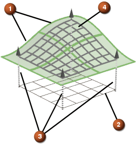

拼合概述
拼合曲面将逼近多个面和/或带四边双三次(阶次为3乘3)B 曲面的曲面。
过程：
-
定义或选择驱动曲面
-
将点投影(垂直于驱动曲面或沿指定矢量)到选定的目标曲面上(即要逼近的曲面)
-
将使用投影的点来创建逼近的 B 曲面

-
 选择的原始曲面或面
选择的原始曲面或面 -
 驱动曲面(现有 B 曲面或使用选定主曲线和交叉曲线创建的曲面)
驱动曲面(现有 B 曲面或使用选定主曲线和交叉曲线创建的曲面) -
 投影矢量(垂直于驱动曲面，或指定的方向)
投影矢量(垂直于驱动曲面，或指定的方向) -
 生成的拼合曲面
生成的拼合曲面